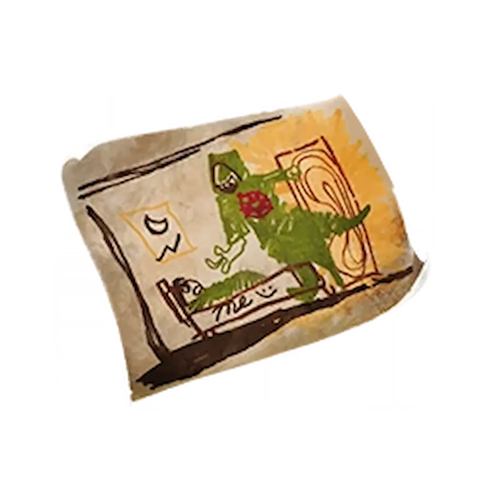
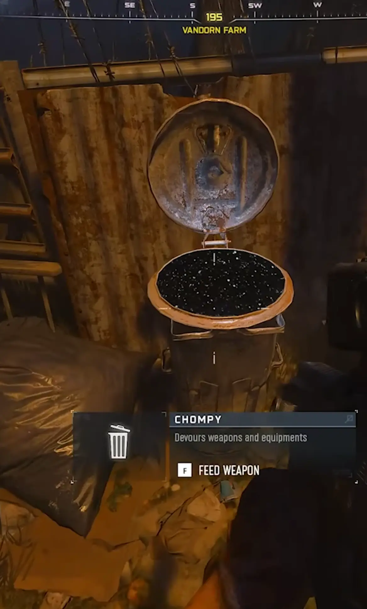

Musisz mieć ukończone zadanie główne Ashes Of The Damned. Mecz musisz rozpocząć na Tier 1. Wyzwanie aktywuje się od rundy 40+.

Twoim głównym celem jest Chompy Bin. Możesz go znaleźć w kilku miejscach: Vandon Farm, Exit 115's Diner, Blackwater Lake, Janus Towers Plaza lub Zarya Cosmodrome. Musisz "nakarmić" kosz bronią o każdym stopniu rzadkości w ściśle określonej kolejności. Nie możesz wrzucać mu granatów ani sprzętu aby nie zespuć zadania!:

PRO TIP: Wykonaj te kroki przed 40. rundą, bo potem znalezienie broni o niskiej rzadkości graniczy z cudem.
WAŻNE: Chompy to wybredna bestia – nie przyjmie Necrofluid Gauntlet!
Jeśli nakarmiłeś go poprawnie, w lokacji Zarya Cosmodrome obok laboratorium Yuri’ego pojawi się żółty portal. Przygotujcie się, bo to wyzwanie sprawdzi Wasze nerwy:
PRO TIP: Wykup też Mule Kick (Kopnięcie Muła), żeby mieć zapasową trzecią broń.
Co daje ten relikt po aktywacji?
WAŻNE: Relikt zmienia Waszą cudowną broń na zwykły pistolet. Tylko Wonder Weapon z głównego zadania nie jest zmieniany.